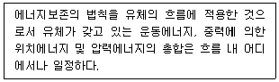
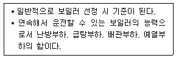
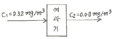
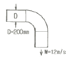
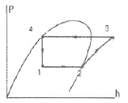
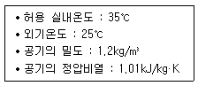
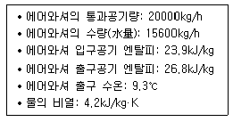
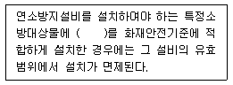
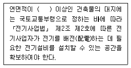

건축설비기사 (2018-03-04 기출문제)
1과목: 건축일반
1. 벽돌면에 구멍을 내어 쌓는 방식이며 힘을 받을 수 없는 장막벽으로 장식적 가리개의 효과를 기대할 수 있는 벽돌쌓기는?
- 세워쌓기
- 엇모쌓기
- 공간쌓기
- 영롱쌓기
(정답률: 77%)

2. 상점의 매장계획에 관한 설명으로 옳지 않은 것은?
- 상품이 고객 쪽에서 효과적으로 보이도록 한다.
- 고객의 동선은 짧게, 점원의 동선을 길게 한다.
- 고객과 직원의 시선이 바로 마주치지 않도록 배치한다.
- 고객을 감시하기 쉬워야 한다.
(정답률: 92%)
3. 아파트계획에서 메조넷 형(Maisonette Type)에 관한 설명으로 옳지 않은 것은?
- 주택내의 공간 변화가 있다.
- 엘리베이터 이용상 비경제적이다.
- 양면 개구일 경우 일조, 통풍 및 전망이 좋다.
- 소규모 주택에서는 면적면에서 불리하다.
(정답률: 72%)
4. 철근콘크리트 보에서 사인장 균열에 대한 보강과 가장 관계 깊은 철근은?
- 늑근
- 배력근
- 인장철근
- 압축철근
(정답률: 73%)
5. 사무소 건축의 코어 구성형식 중 편심코어형식에 관한 설명으로 옳은 것은?
- 중심코어 형식에 비하여 사무공간을 자유롭게 구성하기 어렵다.
- 방재상 유리하며 바닥면적이 커지면 서브코어가 필요하지 않다.
- 코어 접합부에서 변형이 과대해지지 않는 계획이 필요하다.
- 중심코어 형식에 비하여 내진성능이 우수하다.
(정답률: 74%)
6. 아파트 평면형식 중에서 일조 및 통풍이 유리하고, 프라이버시가 침해되기 쉬우나 같은 층에 거주하는 사람과의 친교 기회가 많은 형식은?
- 홀형
- 계단실형
- 편복도형
- 중복도형
(정답률: 91%)
7. 학교의 배치형식 중 분산병렬형의 특징이 아닌 것은?
- 일조, 통풍 등의 교실환경 조건이 균등하다.
- 편복도로 할 경우 복도면적을 많이 차지하지 않고 유기적인 구성을 할 수 있다.
- 구조계획이 간단하다.
- 동선이 길어지고 각 건물 사이의 연결을 필요로 한다.
(정답률: 63%)
8. 건물의 하부 전체 또는 지하실 전체를 하나의 기초판으로 구성한 기초로서 매트기초라고도 하는 것은?
- 연속기초
- 독립기초
- 온통기초
- 복합기초
(정답률: 84%)
9. 상점의 쇼윈도에 관한 설명으로 옳지 않은 것은?
- 쇼윈도의 바닥높이는 귀금속점의 경우는 낮을수록, 운동용품점의 경우는 높을수록 좋다.
- 국부조명은 배열을 바꾸는 경우를 고려하여 자유롭게 수량, 방향, 위치를 변경할 수 있도록 한다.
- 유리면의 반사방지를 위해 쇼윈도 안의 조도를 위부보다 밝게 한다.
- 쇼윈도 내부의 조명에 주광색의 전구를 필요로 하는 상점은 의료품점, 약국 등이다.
(정답률: 77%)
10. 측창채광에 관한 설명으로 옳지 않은 것은?
- 비막이에 유리하다.
- 개폐조작이 용이하고, 유지관리가 쉽다.
- 균일한 조도를 얻을 수 있다.
- 주변 건물들에 의해 채광이 방해받을 수 있다.
(정답률: 77%)
11. 잔향시간에 관란 설명으로 옳은 것은?
- 강당의 최적 잔향시간은 음악당보다 길다.
- 잔향시간은 실내 공간의 용적에 비례한다.
- 강당의 내부벽 재료는 잔향시간에는 영향을 주지 않는다.
- 잔향시간은 정상상태에서 90dB의 음이 감쇠하는데 소요되는 시간을 말한다.
(정답률: 69%)
12. 열람자가 책의 목록에 의해 책을 선택하여 관원에게 대출기록을 제출한 후 책을 대출하는 출납시스템 형식은?
- 자유개가식
- 안전개가식
- 반개가식
- 폐가식
(정답률: 65%)
13. 호텔의 동선계획에 관한 설명으로 옳지 않은 것은?
- 숙박고객과 연회고객과의 동선이 분리되도록 계획한다.
- 숙박고객이 가능한 한 프런트를 통하지 않고 바로 주차장으로 갈 수 있도록 계획한다.
- 최상층에 레스토랑을 설치하는 방안은 엘리베이터 계획에 영향을 주므로 기본계획 시 결정한다.
- 객실층의 동선은 코어의 위치에 따라 결정되므로 충분히 검토하고, 엘리베이터에서 객실에 이르는 동선은 명료하고 혼동되지 않도록 계획한다.
(정답률: 84%)
14. 진동 및 방진대책에 관한 설명으로 옳지 않은 것은?
- 방진고무는 압축용보다 인장용으로 사용하면 더욱 효과적이다.
- 진동차단은 가능한 한 진동원에 가까운 위치에서 감쇠시키는 것이 효과적이다.
- 고체 전파음은 공기음보다 훨씬 빠르고 멀리까지 전해진다.
- 낮은 진동수의 기계류 방진에는 금속 스프링이나 고무재료가 효과적이다.
(정답률: 82%)
15. 커머셜 호텔(commercial hotel)계획에서 크게 고려하지 않아도 되는 것은?
- 주차장
- 발코니
- 레스토랑
- 연회장
(정답률: 79%)
16. 표면결로의 방지대책으로 옳지 않은 것은?
- 냉교(cold bridge)가 생기지 않도록 주의한다.
- 환기로 실내절대습도를 저하시킨다.
- 실내에서 수증기 발생을 억제한다.
- 외벽의 단열강화로 실내측 표면온도를 저하시킨다.
(정답률: 79%)
17. 철골보와 콘크리트 슬래브를 연결하는 전단연결철물(shear connector)로 사용하는 것은?
- 스터드 볼트
- 고장력 볼트
- 앵커 볼트
- TC 볼트
(정답률: 77%)
18. 설계도서가 없는 건물의 구조물 조사진단 시 설계도서 작성과 관련하여 우선적으로 조사하지 않아도 되는 것은?
- 구조체의 치수
- 철근의 치수 및 배근상황
- 재료의 강도
- 균열위치 및 상태
(정답률: 69%)
19. 오피스 랜드스케이프(office landscape)의 장점으로 볼 수 없는 것은?
- 공간 이용률을 높일 수 있다.
- 변화하는 작업의 패턴에 따라 공간의 조절이 가능하며 신속하고 경제적으로 대처할 수 있다.
- 소음이 발생하지 않아 집중작업이 가능하다.
- 커뮤니케이션의 융통성이 있고, 장애요인이 거의 없다.
(정답률: 86%)
20. 말뚝머리 지름이 400mm인 기성콘크리트 말뚝의 중심간격은 최소 얼마 이상으로 하여야 하는가?
- 1000 mm 이상
- 1250 mm 이상
- 1500 mm 이상
- 2000 mm 이상
(정답률: 67%)
2과목: 위생설비
21. 급수방식 중 수도직결방식에 관한 설명으로 옳은 것은?
- 전력 차단 시 급수가 불가능하다.
- 3층 이상의 고층으로의 급수가 용이하다.
- 저수조가 있으므로 단수 시에도 급수가 가능하다.
- 수도 본관의 영향을 그대로 받아 수압 변화가 심하다.
(정답률: 70%)
22. 먹는물의 수질기준에 따른 건강상 유해영향 무기물질에 속하지 않는 것은?
- 납
- 페놀
- 불소
- 수은
(정답률: 59%)
23. 대변기의 세정방식 중 로 탱크(low tank)식에 관한 설명으로 옳은 것은?
- 바닥으로부터 1.6m 이상 높은 위치에 탱크를 설치한다.
- 단시간에 다량의 물이 필요하기 때문에 일반 가정용으로는 사용하지 않는다.
- 사용빈도가 많거나 일시적으로 많은 사람들이 연속하여 사용하는 장소에 적합하다.
- 세정의 경우 탱크로의 급수압력에 관계없이 대변기로의 공급수량이나 압력이 일정하다.
(정답률: 75%)
24. 기구배수부하단위 산정의 기준이 되는 기구는?
- 욕조
- 세면기
- 싱크대
- 샤워기
(정답률: 83%)
25. 원심펌프의 일종으로 날개의 바깥쪽에 가이드베인(guide vane)을 설치한 것은?
- 터빈 펌프
- 기어 펌프
- 베인 펌프
- 피스톤 펌프
(정답률: 74%)
26. 직경 200mm의 강관에 2400L/min의 물이 흐를 때 강관 내의 유속은?
- 0.04m/sec
- 0.40m/sec
- 1.27m/sec
- 1.72m/sec
(정답률: 69%)
27. 수질과 관련된 용어의 설명으로 옳지 않은 것은?
- SS란 오수 중에 떠 있는 부유물질을 말하며, 탁도의 원인이 되기도 한다.
- DO란 오수 중의 산소요구량을 말하며, 오염도가 높을수록 산소요구량이 적다.
- COD란 화학적 산소요구량을 말하며, COD값은 일반적으로 BOD값보다 높게 나타난다.
- BOD란 생물화학적 산소요구량을 말하며, 오수중의 분해가능한 유기물 함유 정도를 간접적으로 측적하는데 이용된다.
(정답률: 79%)
28. 급탕배관에 관한 설명으로 옳은 것은?
- 배관은 하향 구배로 하는 것이 원칙이다.
- 탕비기 주위의 급탕배관은 가능한 짧게 하고 공기가 체류하지 않도록 한다.
- 배관은 신축에 견디도록 가능하면 요철부가 많도록 배관하는 것이 원칙이다.
- 물이 뜨거워지면 수중에 포함된 공기가 분리되기 쉽고, 이 공기는 배관의 상부에 모여서 급탕의 순환을 원활하게 한다.
(정답률: 73%)
29. 슬루스 밸브에 관한 설명으로 옳지 않은 것은?
- 게이트 밸브라고도 한다.
- 리프트가 커서 개패에 시간이 걸린다.
- 유체의 흐름을 단속하는 대표적인 밸브이다.
- 유체의 흐름이 90°로 바뀌기 때문에 유체에 대한 저항이 크다.
(정답률: 77%)
30. 10℃의 냉수 100kg과 70℃의 탕 100kg을 혼합 할 경우, 혼합수의 온도는?
- 36℃
- 38℃
- 40℃
- 42℃
(정답률: 77%)
31. 유체의 성질과 관련하여 다음 설명이 의미하는 것은?

- 파스칼의 원리
- 스토크스의 법칙
- 뉴턴의 점성법칙
- 베르누이의 정리
(정답률: 76%)
32. 통기관의 관경에 관한 설명으로 옳지 않은 것은?
- 신정통기관의 관경은 배수수직관 관경의 1/2 이상으로 한다.
- 루프통기관의 관경은 담당 배수수평지관의 1/2 이상으로 한다.
- 건물의 배수탱크에 설치하는 통기관의 관경은 50mm 이상으로 한다.
- 결합통기관의 관경은 통기수직관과 배수수직관중 작은 쪽 관경 이상으로 한다.
(정답률: 49%)
33. 워터해머의 방지 방법으로 옳지 않은 것은?
- 대기압식 또는 가압식 진공브레이커를 설치한다.
- 관내의 수압은 평상 시 높아지지 않도록 구획한다.
- 배관은 가능한 한 우회하지 않고 직선이 되도록 계획한다.
- 수압이 0.4MPa을 초과하는 계통에는 감압밸브를 부착하여 적절한 압력으로 감압한다.
(정답률: 44%)
34. 급탕설비의 팽창관 및 팽창탱크에 관한 설명으로 옳지 않은 것은?
- 팽창관 도중에는 밸브를 설치하지 않는다.
- 가열장치의 과도한 수온 상승을 방지하기 위해 설치한다.
- 개방식 팽창탱크는 급수방식이 고가탱크방식일 경우에 적합하며 급탕 보급탱크와 겸용할 수 있다.
- 급수방식이 압력탱크방식이나 펌프직송방식의 중앙식 급탕설비의 경우에는 밀폐식 팽창 탱크를 사용한다.
(정답률: 47%)
35. 유체의 점성에 관한 설명으로 옳지 않은 것은?
- 유체의 동점성계수는 점성계수와 밀도와의 비로 표시된다.
- 기체의 점성계수는 일반적으로 온도의 상승과 함께 증가한다.
- 점성이 유체운동에 미치는 영향은 동점성계수값에 의해 결정된다.
- 점성력은 상호 접하는 층의 면적과 그 관계속도의 제곱에 비례한다.
(정답률: 50%)
36. 배수수직관 내가 부압으로 되는 곳에 배수수평지관이 접속되어 있는 경우, 배수수평지 관 내의 공기가 수직관으로 유인되어 봉수가 파괴되는 현상(작용)은?
- 증발 현상
- 모세관 현상
- 유도사이폰 작용
- 자기사이폰 작용 r
(정답률: 71%)
37. 양수펌프의 흡수면으로부터 토출수면까지의 실제 높이는 20m이고, 흡입관과 토출관의 관경이 같은 경우 펌프의 전양정은? (단, 관로의 전손실수두는 실양정의 20%로 한다.)
- 20m
- 22m
- 24m
- 26m
(정답률: 65%)
38. 배관의 마찰저항에 관한 설명으로 옳은 것은?
- 유속의 제곱에 비례한다.
- 관이 길이에 반비례한다.
- 관 내경의 제곱에 비례한다.
- 유체의 점성이 클수록 감소한다.
(정답률: 75%)
39. 중앙식 급탕방식에 관한 설명으로 옳지 않은 것은?
- 배관에 의해 필요 개소에 급탕할 수 있다.
- 급탕 개소마다 가열기의 설치 스페이스가 필요하다.
- 기구의 동시이용률을 고려하여 가열장치의 총용량을 적게 할 수 있다.
- 호텔, 병원 등 급탕 개소가 많고 소요 급탕량도 많이 필요한 대규모 건축물에 채용된다.
(정답률: 76%)
40. 다음 중 원칙적으로 청소구(clean out)를 설치하여야 하는 곳에 속하지 않는 것은?
- 배수수직관의 최상부
- 배수수평주관이 기점
- 배수수평지관의 기점
- 배수관이 45° 이상의 각도로 방향을 바꾸는 곳
(정답률: 81%)
3과목: 공기조화설비
41. 다음 설명에 알맞은 보일러의 출력 표시 방법은?

- 정격출력
- 상용출력
- 정미출력
- 과부하출력
(정답률: 77%)
42. 공조기의 저항이 30mmAq, 덕트의 필요 전압이 11mmAq, 송풍기의 토출구 풍속이 6m/s 일 때, 송풍기의 정압은?
- 약 35mmAq
- 약 39mmAq
- 약 43mmAq
- 약 45mmAq
(정답률: 36%)
43. 창의 틈새바람 계산법에 속하지 않는 것은?
- 균열법
- 면적법
- 환기횟수법
- 굴뚝효과에 의한 계산법
(정답률: 59%)
44. 다음 그림과 같은 여과장치의 효율은?

- 25%
- 66%
- 75%
- 83%
(정답률: 71%)
45. 다음 그림과 같은 엘보의 국부저항은? (단, 곡관부의 국부저항손실계수는 0.35, 공기의 밀도는 1.2kg/m3이다.)

- 약 10Pa
- 약 20Pa
- 약 30Pa
- 약 40Pa
(정답률: 54%)
46. 건물의 냉방부하의 종류 중 현열과 잠열성분을 모두 갖는 것은?
- 인체의 발생열량
- 벽체로부터의 취득열량
- 유리로부터의 취득열량
- 덕트로부터의 취득열량
(정답률: 83%)
47. 온수난방방식에 관한 설명으로 옳은 것은?
- 용량제어가 어렵고 응축수에 의한 열손실이 크다.
- 실내온도의 상승이 빠르고 예열손실이 적어 간헐난방에 적합하다.
- 증기난방에 비하여 소요방열면적과 배관경이 작으므로 설비비가 낮다.
- 열용량이 크므로 보일러를 정지시켜도 실내난방이 어느정도 지속된다.
(정답률: 75%)
48. 정압 재취득법에 관한 설명으로 옳지 않은 것은?
- 고속덕트의 경우 부적합하다.
- 취출구 직전의 정압이 대략 일정해진다.
- 등압변에 비해 송풍기 동력이 절약되며 풍량조절이 용이하다.
- 덕트구간에서 앞 구간의 동압감소로 인해 얻은 정압을 다음 구간에서 이용하는 방법이다.
(정답률: 55%)
49. 다음 중 일사를 받는 외벽·지붕으로부터의 취득열량을 계산하는데 필요한 요소가 아닌것은?
- 면적
- 열관류율
- 상당외기온도차
- 표준일사열취득열량
(정답률: 49%)
50. 송풍기의 회전수 500rpm에서 풍량은 200m3/min이었다. 회전수를 600rpm으로 올렸을 경우 풍량은?
- 210m3/min
- 240m3/min
- 288m3/min
- 356m3/min
(정답률: 68%)
51. 냉각코일의 용량 결정 시 고려되는 요소와 가장 거리가 먼 것은?
- 배관부하
- 재열부하
- 외기부하
- 실내 취득열량
(정답률: 44%)
52. 배관 일부의 교환 및 수리를 용이하게 하기 위하여 사용하는 배관 부속품은?
- 티
- 엘보
- 플러그
- 유니온
(정답률: 76%)
53. 개방식 배관의 펌프 흡입관 선단에 부착하여 펌프 운전 중에는 물론 펌프 정지 시에도 흡입관 내를 만수상태로 유지하기 위해 설치하는 것은?
- 관트랩
- 박스트랩
- 스트레이너
- 풋형 체크밸브
(정답률: 69%)
54. 습공기의 상태변화량 중 수분의 변화량과 엔탈피 변화량 비율을 의미하는 것은?
- 현열비
- 열수분비
- 접촉계수
- 바이패스계수
(정답률: 75%)
55. 다음의 증기압축 냉동사이클의 압력(P)-엔탈피(h)선도에 관한 설명으로 옳지 않은 것은?(오류 신고가 접수된 문제입니다. 반드시 정답과 해설을 확인하시기 바랍니다.)

- 과정 1→2는 정압증발과정이다.
- 과정 2→3은 단열압축과정이다.
- 과정 3→4는 정압응축과정이다.
- 과정 4→1은 단열팽창과정이다.
(정답률: 52%)
56. 다음과 같은 조건에서 어느 작업장의 발생 현열량이 4000W일 때 필요 환기량(m3/h)은?

- 411.3
- 698.8
- 872.5
- 1188.1
(정답률: 57%)
57. 다음 중 재실인원이 적은 실에 부하변동이 크고 극간풍이 비교적 많은 경우 공조방식으로 가장 적절한 것은?
- FCU방식
- 멀티존 유니트 방식
- 2중덕트 정풍량방식
- 단일덕트 정풍량방식
(정답률: 67%)
58. 온수에서 분리된 공기를 배제하기 위한 배관방법으로 가장 알맞은 것은?
- 배수밸브를 설치한다.
- 감압밸브를 설치한다.
- 팽창관에 밸브를 설치한다.
- 팽창탱크를 향하여 선상향 구배로 한다.
(정답률: 62%)
59. 응축수의 드레인 배관이 필요없는 곳은?
- 재열기
- 팬코일 유닛
- 패키지 공조기
- 에어 핸들링 유닛
(정답률: 64%)
60. 다음과 같은 조건에 있는 에어와셔의 입구 수온은?

- 약 8.4℃
- 약 9.7℃
- 약 10.2℃
- 약 11.5℃
(정답률: 47%)
4과목: 소방 및 전기설비
61. 3상유도 전동기의 기동법으로 Y-△기동법을 사용하는 가장 주된 목적은?
- 전압을 높이기 위하여
- 기동전류를 줄이기 위하여
- 전동기의 출력을 높이기 위하여
- 전동기의 동기속도를 높이기 위하여
(정답률: 65%)
62. 피드백 제어방식을 제어동작에 의해 분류할 경우, 다음 중 불연속 동작에 속하는 것은?
- 비례동작
- 미분동작
- 적분동작
- 다위치동작
(정답률: 68%)
63. 교류회로에서 전압 220[V], 전류5[A]일 때 저항은 얼마인가?
- 22[Ω]
- 33[Ω]
- 44[Ω]
- 55[Ω]
(정답률: 78%)
64. 정현과 교류의 파형률은 얼마인가?
- 1.0
- 1.11
- 1.414
- 1.571
(정답률: 56%)
65. 그림과 같이 반대의 극을 갖는 막대자석을 놓았을 때 상호간에 작용하는 힘의 종류는?
- 흡인력
- 반발력
- 회전력
- 마찰력
(정답률: 75%)
66. 제1종 접지공사의 접지저항값은 최대 얼마 이하이어야 하는가?
- 2[Ω]
- 5[Ω]
- 10[Ω]
- 100[Ω]
(정답률: 72%)
67. 피드백 제어에서 제어요소는 무엇으로 구성되는가?
- 비교부와 조작부
- 비교부와 검출부
- 조절부와 조작부
- 조절부와 검출부
(정답률: 58%)
68. 우리나라의 가정용 전압은 교류220[V]이다. 이 전압의 최대값은 몇[V] 인가?
- 220
- 220×√2
- 220×√3
- 440
(정답률: 55%)
69. 가스계량기는 전기점멸기와 최소 얼마 이상의 거리를 유지하여야 하는가?
- 30cm
- 45cm
- 60cm
- 90cm
(정답률: 60%)
70. 전류가 도선을 통하여 흐를 때 도선의 둘레에 발생하는 것은?
- 전계
- 자계
- 정전계
- 중력계
(정답률: 62%)
71. 수전설비에서 인입구 개폐기로 사용되지 않는 것은?
- LBS
- ASS
- DS
- PF
(정답률: 55%)
72. 인공광원 중 효율이 높지만 등황색의 단색광으로 색채의 식별이 곤란하므로 주로 터널 조명에 사용되는 것은?
- 형광램프
- 할로겐램프
- 저압나트륨램프
- 메탈헬라이드램프
(정답률: 74%)
73. C급 화재가 의미하는 화재의 종류는?
- 일반화재
- 전기화재
- 유류화재
- 주방화재
(정답률: 78%)
74. 스프링클러설비의 알람밸브에 리타딩챔버를 설치하는 주된 목적은?
- 오보를 방지한다.
- 자동배수를 한다.
- 방수압을 시험한다.
- 가압수의 온도를 검지한다.
(정답률: 76%)
75. 3층 건물의 각 층에 옥내소화전이 2개씩 설치되어 있는 경우, 옥내소화전설비의 수원의 저수량은 최소 얼마 이상이 되도록 하여야 하는가?
- 3.2m3
- 3.4m3
- 5.2m3
- 14m3
(정답률: 63%)
76. 스프링클러설비에 관한 설명으로 옳지 않은 것은?
- 초기 화재 진압에 효과적이다.
- 소화약제가 물이므로 경제적이다.
- 감지부의 구조가 기계적이므로 오보 및 오동작이 적다.
- 다른 소화설비에 비해 시공이 단순하여 초기에 시설비용이 적게 든다.
(정답률: 77%)
77. 작업면에 필요한 평균조도가300[lx], 면적이 50[m2], 램프 한 개의 광속이 2500[lm], 감광보상률이 1.5, 조명률이 0.5일 때 전등의 소요수량은?
- 6개
- 12개
- 18개
- 24개
(정답률: 60%)
78. 정보통신설비를 정보설비와 통신설비로 구분할 경우, 다음 중 통신설비에 속하지 않는 것은?
- 인터폰설비
- CCTV설비
- TV공청설비
- 화장회의설비
(정답률: 61%)
79. 단상 유도전동기의 종류에 속하는 것은?
- 분권 전동기
- 타여자 전동기
- 권선형 유도전동기
- 콘덴서 기동형 전동기
(정답률: 43%)
80. 20[W] 형광램프 2개를 하루에 6시간씩 30일 동안 사용하였을 경우 사용전력량은?
- 0.24[kWh]
- 3.6[kWh]
- 7.2[kWh]
- 10.4[kWh]
(정답률: 77%)
5과목: 건축설비관계법규
81. 건축물의 설비기준 등에 관한 규칙에 따라 피뢰설비를 설치하여야 하는 건축물의 높이 기준은?
- 10m 이상
- 15m 이상
- 20m 이상
- 31m 이상
(정답률: 75%)
82. 문화 및 집회시설 중 공연장의 개별관람석의 바닥면적이 500m2인 경우 개별관람석 출구의 유효너비의 합계는 최소 얼마 이상이어야 하는가?
- 1m
- 2m
- 3m
- 4m
(정답률: 62%)
83. 건축법령상 단독주택에 속하지 않는 것은?
- 공관
- 기숙사
- 다중주택
- 다가구주택
(정답률: 71%)
84. 다음 중 제연설비를 설치하여야 하는 특정소방대상물에 속하지 않는 것은?
- 지하가(터널 제외)로서 연면적 1000m2인 것
- 문화 및 집회시설로서 무대부의 바닥면적이 200m2인 것
- 문화 및 집회시설 중 영화상영관으로서 수용 인원 100명인 것
- 지하층에 설치된 숙박시설로서 해당 용도로 사용되는 바닥면적의 합계가 500m2인 층
(정답률: 47%)
85. 건축물의 바깥쪽으로의 출구로 쓰이는 문을 안여닫이로 하여서는 안되는 대상 건축물에 속하지 않는 것은?
- 종교시설
- 위락시설
- 문화 및 집회시설 중 관람장
- 문화 및 집회시설 중 전시장
(정답률: 62%)
86. 6층 이상의 거실면적의 합계가 5000m2인 경우, 설치하여야 하는 승용 승강기의 최소 대수가 가장 많은 것은? (단, 8인승 승강기의 경우)
- 업무시설
- 숙박시설
- 위락시설
- 의료시설
(정답률: 67%)
87. 모든 층에 주거용 주방자동소화장치를 설치하여야 하는 특정소방대상물은?
- 기숙사
- 아파트 등
- 일반음식점
- 휴게음식점
(정답률: 76%)
88. 건축물의 에너지절약설계기준에 따른 건축부문의 권장사항으로 옳지 않은 것은?
- 공동주택은 인동간격을 넓게 하여 저층부의 일사 수열량을 증대시킨다.
- 건축물의 체적에 대한 외피면적의 비 또는 연면적에 대한 외피면적의 비는 가능한 크게 한다.
- 거실의 층고 및 반자 높이는 실의 용도와 기능에 지장을 주지 않는 범위 내에서 가능한 낮게 한다.
- 건물의 창 및 문은 가능한 작게 설계하고, 특히 열손실이 많은 북측 거실의 창 및 문의 면적은 최소화한다.
(정답률: 73%)
89. 건축물의 거실(피난층 거실 제외)에 국토교통부령으로 정하는 기준에 따라 배연설비를 하여야 하는 대상 건축물에 속하지 않는 것은? (단, 층수가 6층인 건축물의 경우)
- 판매시설
- 종교시설
- 문화 및 집회시설
- 제1종 근린생활시설
(정답률: 50%)
90. 녹색건축 인증의 유효기간으로 옳은 것은?
- 녹색건축 인증서를 발급한 날부터 3년
- 녹색건축 인증서를 발급한 날부터 5년
- 녹색건축 인증서를 발급한 날부터 10년
- 녹색건축 인증서를 발급한 날부터 15년
(정답률: 66%)
91. 공동주택의 난방설비를 개별난방방식으로 하는 경우에 관한 기준 내용으로 옳지 않은 것은?
- 보일러의 연도는 방화구조로서 개별연도로 설치할 것
- 보일러실의 윗부분에는 면적이 0.5m2 이상인 환기창을 설치할 것
- 기름보일러를 설치하는 경우에는 기름저장소를 보일러실외의 다른 곳에 설치할 것
- 보일러를 설치하는 곳과 거실 사이의 경계벽은 출입구를 제외하고는 내화구조의 벽으로 구획 할 것
(정답률: 56%)
92. 건축물을 특별시나 광역시에 건축하는 경우, 특별시장이나 광역시장의 허가를 받아야 하는 대상 건축물이 연면적 기준은?
- 연면적 합계가 1만 제곱미터 이상
- 연면적 합계가 5만 제곱미터 이상
- 연면적 합계가 10만 제곱미터 이상
- 연면적 합계가 20만 제곱미터 이상
(정답률: 69%)
93. 공사의 공사감리자가 필요하다고 인정하면 공사시공자에게 상세시공도면 작성을 요청할 수 있는 건축공사의 연면적 기준은?
- 연면적의 합계가 1000m2 이상인 건축공사
- 연면적의 합계가 2000m2 이상인 건축공사
- 연면적의 합계가 5000m2 이상인 건축공사
- 연면적의 합계가 10000m2 이상인 건축공사
(정답률: 69%)
94. 다음은 특정소방대상물의 소방시설 설치의 면제에 관한 기준 내용이다. ( )안에 포함되지 않은 소방시설은?

- 스프링클러설비
- 옥내소화전설비
- 물분무소화설비
- 미분무소화설비
(정답률: 60%)
95. 건축물에 설치하여야 하는 비상용 승강기의 승강장 및 승강로의 구조에 관한 기준 내용으로 옳지 않은 것은?
- 승강장은 각 층의 내부와 연결될 수 있도록 할 것
- 승강로는 당해 건축물의 다른 부분과 내화구조로 구획할 것
- 벽 및 반자가 실내에 접하는 부분의 마감재료는 난연재료로 할 것
- 각 층으로부터 피난층까지 이르는 승강로는 단일구조로 연결하여 설치할 것
(정답률: 68%)
96. 다음의 소방시설 중 소화활동설비에 속하지 않는 것은?
- 제연설비
- 연결살수설비
- 옥외소화전설비
- 무선통신보조설비
(정답률: 54%)
97. 연면적 200m2를 초과하는 건축물에 설치하는 계단의 유효 높이(계단의 바닥 마감면부터 상부 구조체의 하부 마감면까지의 연직방향의 높이)는 최소 얼마 이상으로 하여야 하는 가?
- 1.8m
- 2.1m
- 2.4m
- 2.7m
(정답률: 60%)
98. 다음 중 준다중이용 건축물에 속하지 않는 것은? (단, 해당 용도로 쓰는 바닥면적의 합계가 1000m2인 건축물의 경우)
- 종교시설
- 판매시설
- 위락시설
- 수련시설
(정답률: 48%)
99. 특별피난계단의 구조에 관한 기준 내용으로 옳지 않은 것은?
- 계단은 내화구조로 하되, 피난층 또는 지상까지 직접 연결되도록 할 것
- 출입구의 유효너비는 0.9m 이상으로 하고 피난의 방향으로 열 수 있을 것
- 건축물의 내부에서 노대 또는 부속실로 통하는 출입구에는 갑종방화문 또는 을종방화문을 설치할 것
- 계단실에는 노대 또는 부속실에 접하는 부분 외에는 건축물의 내부와 접하는 창문 등을 설치하지 아니할 것
(정답률: 57%)
100. 다음은 건축설비 설치의 원칙에 관한 기준 내용이다. ( )안에 알맞은 것은?

- 100m2
- 500m2
- 1000m2
- 5000m2
(정답률: 50%)